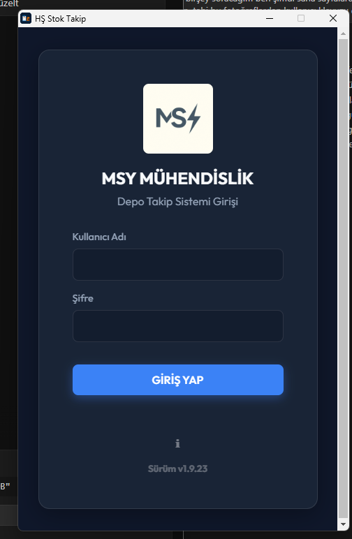
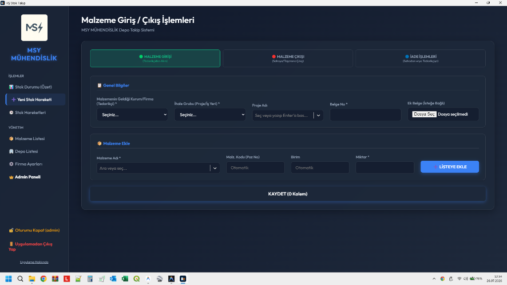
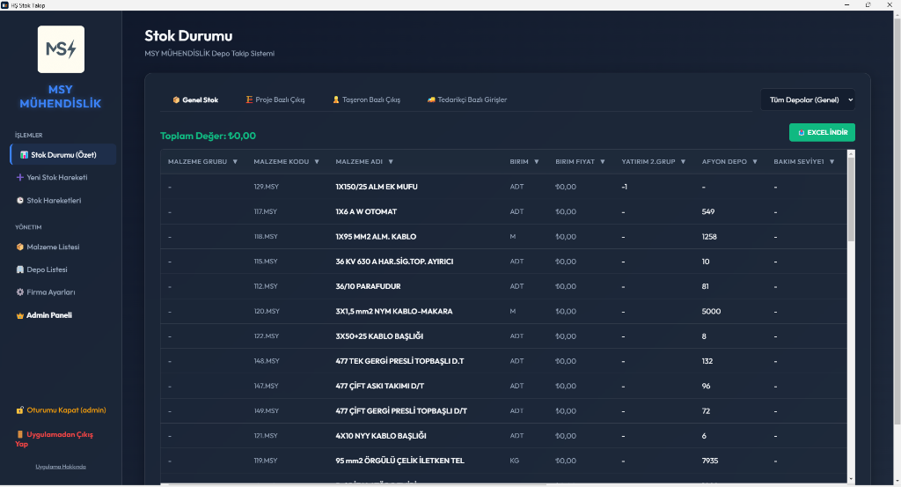
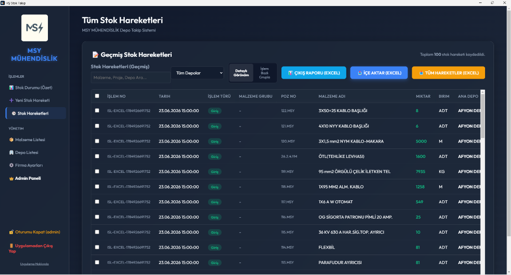
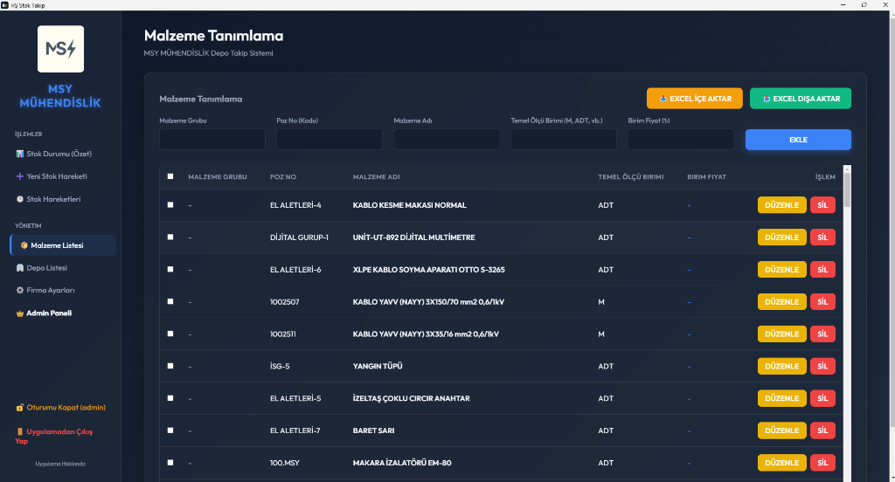
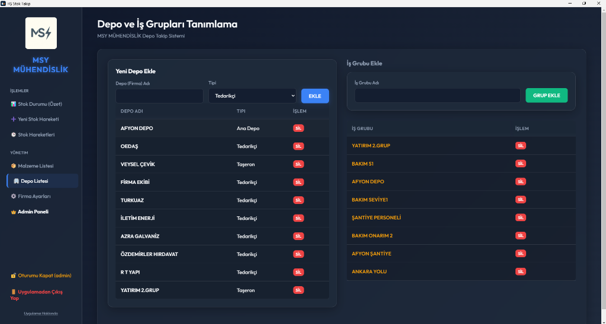
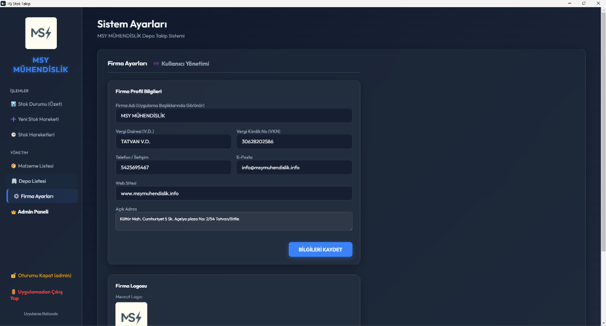
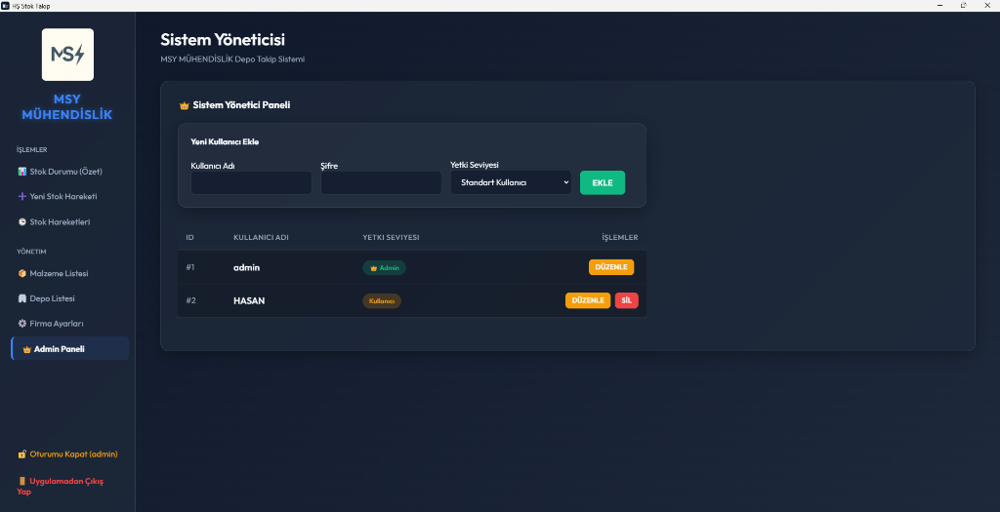
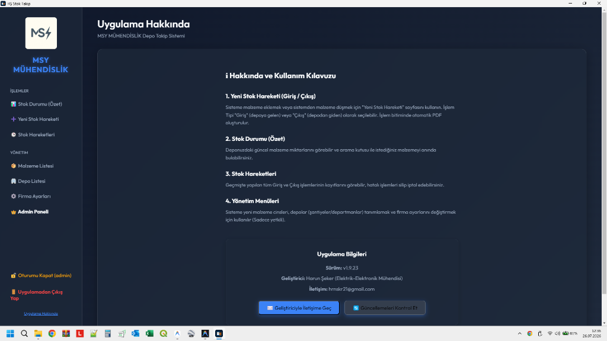

HŞ Stok Takip Sistemi
Kullanım Kılavuzu
Bu kılavuz, HŞ Stok Takip Sistemi'nin temel özelliklerini ve kullanımını adım adım anlatmaktadır. Uygulama, şirketinizin malzeme giriş/çıkış süreçlerini, stok takibini ve depo yönetimini dijital ortamda pratik ve hatasız bir şekilde gerçekleştirmeniz için tasarlanmıştır.
1. Sisteme Giriş (Login)
Uygulamayı açtığınızda karşınıza şifreli bir giriş ekranı gelir. Size tanımlanmış olan Kullanıcı Adı ve Şifre ile sisteme güvenli bir şekilde giriş yapabilirsiniz.
- Sadece sisteme tanımlı, yetkili kullanıcılar erişebilir.
- Giriş ekranının sol altında bulunan küçük i ikonuna tıklayarak uygulamanın sürüm bilgilerini görebilir veya geliştirici ile iletişim seçeneklerine ulaşabilirsiniz.

2. Stok Durumu (Özet)
Sisteme giriş yaptıktan sonra ilk açılan ana ekrandır.
- Canlı Stok Takibi: Deponuzda bulunan tüm malzemelerin listesini, toplam parasal değerini ve depolar (Ana depo, şantiye depoları, taşeronlar) arasındaki malzeme dağılımını canlı olarak gösterir.
- Hızlı Arama: Üst kısımda bulunan arama çubuğu ile binlerce kalem malzeme arasından istediğiniz malzemeyi veya poz numarasını saniyeler içinde anında bulabilirsiniz.
- Excel İndirme: Sağ üst köşedeki Excel İndir butonuna tıklayarak ekrandaki güncel stok tablosunu tek tıkla Excel (.xlsx) formatında bilgisayarınıza kaydedebilir, raporlama için kullanabilirsiniz.

3. Yeni Stok Hareketi (Giriş / Çıkış)
Sisteme yeni malzeme eklemek veya sistemden malzeme düşmek için bu sayfa kullanılır.
- İşlem Tipi Seçimi:
- Malzeme Girişi: Tedarikçilerden yeni alınan veya satın alınan malzemeleri depoya eklemek için kullanılır.
- Malzeme Çıkışı: Depodan sahaya, taşerona veya şantiyeye gönderilen malzemeleri stoktan düşmek için kullanılır.
- İade İşlemleri: Sahadan depoya iade gelen, kullanılmayan malzemeler için kullanılır.
- Detaylı Kayıt: İşlem yaparken; malzemenin geldiği/gittiği Kurum veya Firma, İhale Grubu, Proje Adı, Belge Numarası ve İrsaliye/Fatura gibi belgeleri PDF veya resim olarak sisteme ekleyebilirsiniz.
- Otomatik PDF İrsaliye: Eklenecek malzemeleri seçip Kaydet butonuna bastığınızda, sistem yapılan işlemin resmi PDF fişini (irsaliyesini) otomatik olarak oluşturur ve anında yazdırmanız veya bilgisayara kaydetmeniz için ekrana getirir.

4. Stok Hareketleri (Geçmiş)
Geçmişte yapılan tüm giriş-çıkış hareketlerinin, kim tarafından ve ne zaman yapıldığının kayıt altında tutulduğu sayfadır.
- Filtreleme: İsterseniz tüm depoların hareketlerini, isterseniz sadece belirli bir şantiyenin (Örn: Afyon Depo) geçmiş hareketlerini filtreleyip inceleyebilirsiniz.
- Raporlama: "Çıkış Raporu", "İçe Aktar" ve "Tüm Hareketler" butonları sayesinde istediğiniz türdeki geçmiş hareketleri tek tıkla Excel'e aktarabilirsiniz.
- Hatalı İşlem İptali: Eğer sisteme yanlış bir giriş veya çıkış kaydı eklendiyse, bu listeden ilgili işlemi bularak silebilirsiniz. Silinen işlemin malzemeleri otomatik olarak stoğa geri eklenir veya stoktan düşülür, denge sağlanır.

5. Malzeme Listesi (Yönetim)
Sisteme yeni malzeme cinsleri ve türlerinin tanımlandığı yönetim sayfasıdır.
- Yeni Kayıt: Kullanılacak malzemelerin Malzeme Grubu, Poz Numarası (Kodu), Malzeme Adı, Temel Ölçü Birimi (Adet, Kg, Metre vb.) ve Birim Fiyatları buradan sisteme eklenir. Bu işlem bir kere yapılır ve artık sistem bu malzemeyi tanır.
- Toplu Excel Aktarımı: Eğer elinizde yüzlerce malzemelik hazır bir Excel listesi varsa, tek tek girmek yerine Excel İçe Aktar özelliği ile tüm listeyi tek saniyede sisteme yükleyebilirsiniz.

6. Depo Listesi (Yönetim)
Malzemelerin fiziksel olarak bulunabileceği lokasyonların, şantiyelerin veya taşeronların sisteme tanımlandığı sayfadır.
- Depo Türleri: Sistemde 3 farklı ana depo tipi bulunur: Ana Depo, Tedarikçi ve Taşeron.
- Siz bu ekrandan yeni bir depo (Örn: "Afyon Şantiye" veya "Ankara Yolu") eklediğiniz anda, sistem anında "Stok Durumu" tablosunda yeni bir sütun açar ve o şantiyenin stoğunu ayrı bir hesapta takip etmenize olanak tanır.

7. Firma Ayarları
Uygulamanın kişiselleştirildiği ve firmanıza özel hale getirildiği bölümdür. (Sadece Admin yetkisiyle erişilebilir)
- Firma Bilgileri: Çıktı alınan resmi PDF fişlerinin başlığında görünecek olan; Firma Adı, Vergi Dairesi, Vergi Kimlik Numarası (VKN), Telefon, E-Posta ve Açık Adres gibi bilgileri buradan güncelleyebilirsiniz.
- Firma Logosu: Sistemin giriş ekranında, sol menünün en üstünde ve yazdırılan resmi belgelerde görünecek olan firmanızın logosunu buradan değiştirebilirsiniz.

8. Admin Paneli (Sistem Yöneticisi)
Uygulamayı kullanacak diğer ofis/depo personellerinin yönetildiği kısımdır. (Sadece Admin yetkisiyle erişilebilir)
- Yeni personeller için kullanıcı adı ve şifre tanımlayabilirsiniz.
- Personellere Admin (tam yetkili, her ayarı değiştirebilir) veya Standart Kullanıcı (sadece stok giriş-çıkışı yapabilir, ayarları ve geçmiş kayıtları değiştiremez) yetkisi verebilirsiniz.
- Artık çalışmayan personellerin hesaplarını silebilir veya bilgilerini düzenleyebilirsiniz.

